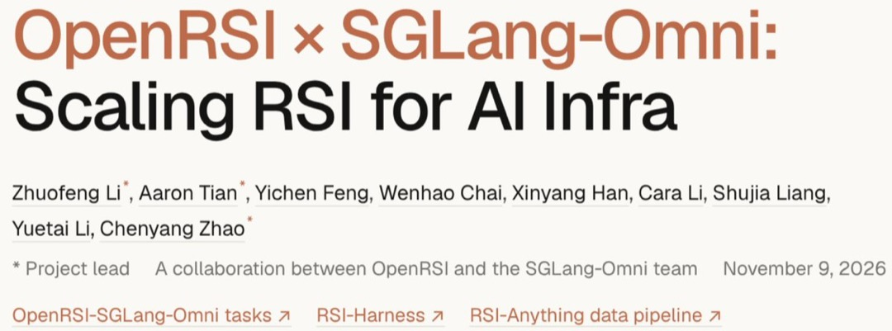
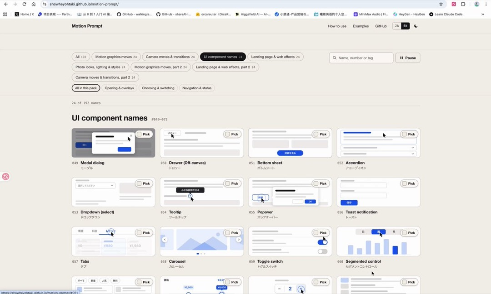
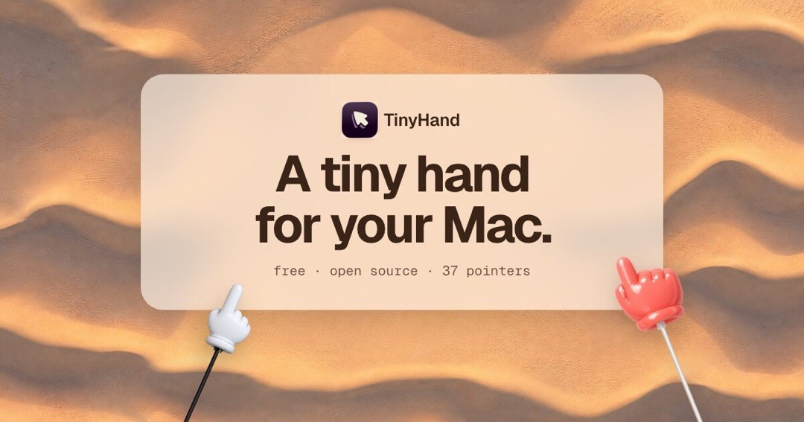
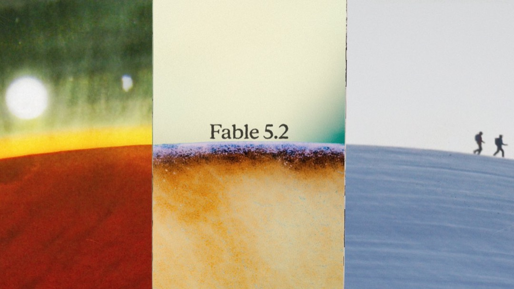
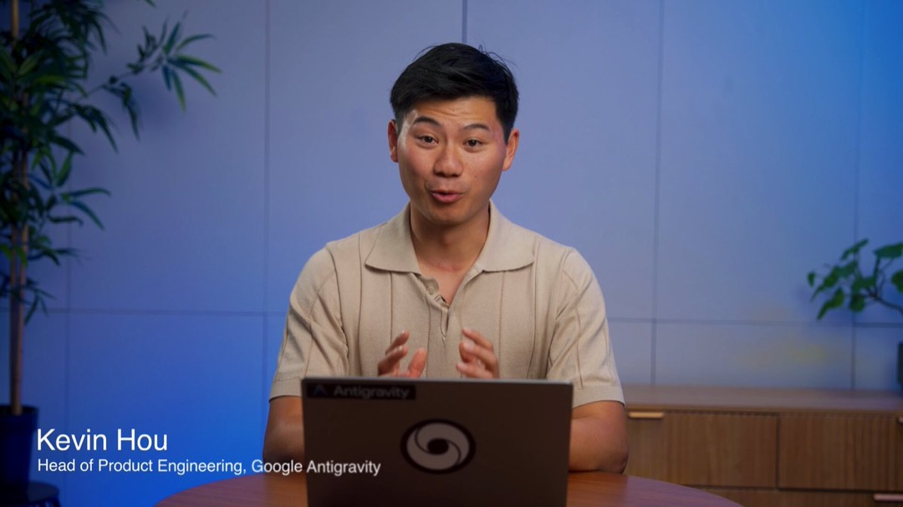
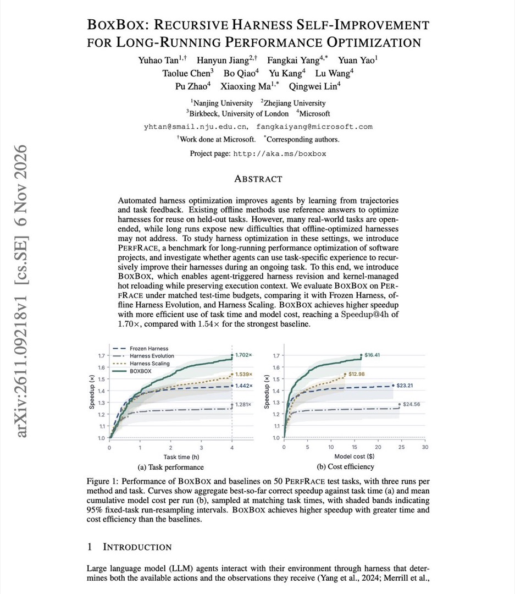
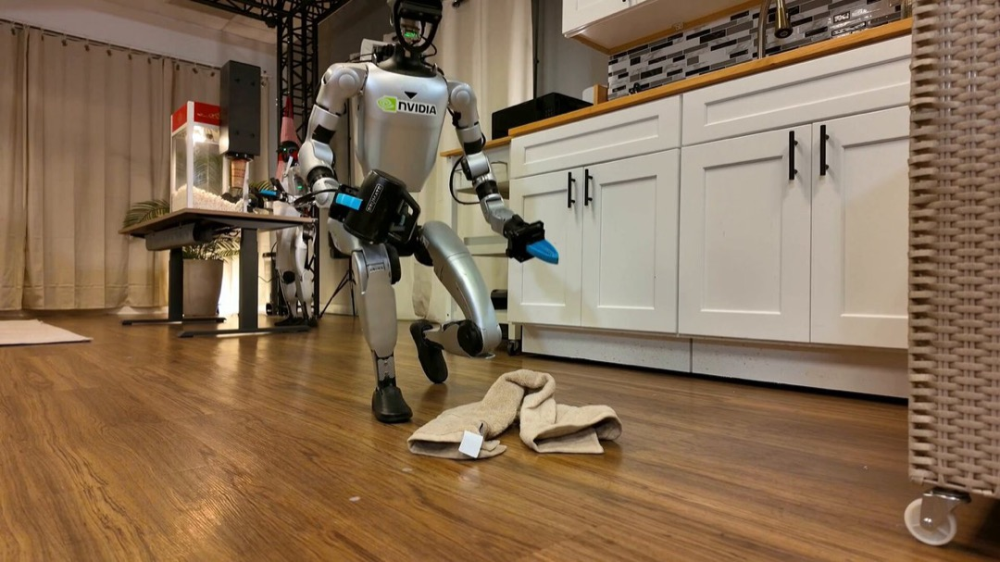

本期速览
01 SGLang Omni吞吐最高增344%
03 0sec开源AI安全harness
06 Claude Fable 5.2提速降价
10 BOXBOX支持运行中热改harness
11 GR00T 2一模型适配多形态机器人
12 OpenAI 35秒叫停模型输出
01｜SGLang Omni吞吐最高增344%
来源（X） · @GenAI_is_real · 2026-11-10 05:52
如果你不相信 RSI，你会认为 AI 的变现途径是 ToC 产品。但如果你相信 RSI，随着这些重大挑战被逐一攻克，你甚至不需要考虑如何创造经济价值，因为这本身就是巨大的经济价值。
非常荣幸能与 OpenRSI 团队合作，并通过 SGLang Omni 实现如此巨大的飞跃。需要澄清的是，这里 300% 的提升，是因为我们在模型支持工作开始仅两天、尚未进行任何人工优化的时候，就把这个模型交给了 OpenRSI 团队，所以提升幅度才如此惊人。对于大多数我们已经看到明显提升的模型，提升幅度在 30% 左右，这仍然是非常显著的改进。
很长一段时间，模型的性能优化需要投入大量的人力、资源和时间。但借助前沿模型和 OpenRSI 的强大能力，我们可以以极低的智力成本完成这些任务。
引用内容
OpenRSI Foundation @OpenRSI
中文译文
我们将递归自我改进（RSI）扩展到了生产级AI基础设施，使用SGLang-Omni，在8个语音与全能模型上合入了14个上游PR，吞吐量提升了7.6%–344.3%。
博客：https://index.openrsi.foundation/blog/2026/openrsi-sglang-omni/
原文
We scaled Recursive Self-Improvement (RSI) to production AI infrastructure with SGLang-Omni, shipping 14 upstream-merged PRs across 8 speech & omni models with 7.6%–344.3% throughput gains.
Blog: https://index.openrsi.foundation/blog/2026/openrsi-sglang-omni/

02｜Motion Prompt动效提示词库
来源（X） · @ChatGptAstra · 2026-11-09 18:03
真正限制你的，不是想象力，而是你压根不知道怎么描述你要实现的效果。
这个项目，收录了192个带专业名称的效果库，每个名称还配有动态示例，让你直接点击Copy Prompt，即可一键让AI帮你实现你想要的效果。
落地页特效、动效、镜头移动、摄影风格等方向，全都有作业可抄！
1. 项目地址：
https://github.com/showheyohtaki/motion-prompt
2. 动态画廊，所有效果均可实时播放：
https://showheyohtaki.github.io/motion-prompt/
3. 也可作为 Skill 直接给 Agent 调用，让它直接帮你改好：
npx skills add showheyohtaki/motion-prompt

引用内容
摸鱼巨匠🔨 @ChatGptAstra
1. Looseleaf
纸张纹理 + 手绘钢笔线条 + 胶带贴纸风格，像画在笔记本上的完整界面。
https://kevintngo.github.io/looseleaf/
2. Rare UI
专门做稀有的动画组件，每个组件一个文件，支持shadcn CLI/MCP安装
http://rareui.com
3. ExpoKit
带液态玻璃、3D效果、图表等的移动端高端组件库
https://expokit.in/
4. goopUI
帮你做出会滴落、拉伸、融合的液体物理效果。
http://goop.timmcmasters.work/docs/components
5. beUI
动画丰富的组件库，覆盖Web和React Native。
https://beui.dev/
6. Sketchbook UI
手绘笔记本风React组件库
https://sarthakrawat-1.github.io/sketchbook-ui/
7. AffectUI
专注AI产品的React组件库，Agent可观测性做得非常深
https://www.affectui.com/
03｜0sec开源AI安全harness
来源（X） · @zg0820 · 2026-11-09 19:43
它本身不是模型，是套在 LLM 外面的控制平面，模型自带：接 OpenAI、Anthropic、DeepSeek、Kimi、GLM、Grok 都行。一个 harness 覆盖五个面——Web、源码、依赖包、二进制（内嵌 0verse 引擎，包了 Ghidra、angr、AFL++）、内核。Web 渗透那条线是 shell 优先的，agent 拿 bash 加 curl、python3、sqlmap 直接干，而不是封装好的工具集，每条证据带从 candidate 到 impact-proven 的置信分级。
架构文档里有一条原则值得单独抄下来：reproduce before trusting。每个候选漏洞都要在独立会话里重新触发一遍，5 轮对话内给结论，给不出就不算确认。AI 安全工具最容易出的毛病就是「看起来像漏洞」的幻觉报告，这条纪律算是正面回应。
基准数字要平着看：XBOW Web CTF 93/95 是自报的，还是 any-success 分组口径；换成黑盒 union 口径只有 81/104，2026 年一次冷启动跑到 45/104。同一套系统在不同评测设置下分数差这么多，本身就说明 AI 安全能力的分数对设置极其敏感。对做安全的人，这个 harness 的价值不在分数，在它把「调查、分诊、复现、报告」这条流程产品化了，接上自己的模型和授权目标就能跑，这个工程框架比 97.9% 那个数字有用得多。
04｜TinyHand把鼠标变成演示小手
来源（X） · @QingQ77 · 2026-11-10 07:25
https://github.com/nilbuild/tinyhand
TinyHand 是 macOS 13+ 的菜单栏小工具，把鼠标指针换成一根棍子上的小手，用来在演示、录屏或跟人讲屏幕时指出位置。
按 ⌃⌥H 或点菜单栏图标开关指针，单击只播放敲击动画、底下的内容不会被点到，按住拖动可以在屏幕上画线，⌃⌥X 清除笔迹，Esc 一次清空并关掉指针。

05｜Wyndham应用硬编码凭据泄露数据
来源（X） · @TechCrunch · 2026-11-10 07:05
中文译文
独家：温德姆在其客户应用中留下了一个硬编码凭证，任何人都可以访问客户数据。这家酒店巨头不愿透露是否能够检查过去是否存在任何未授权访问。
https://spr.ly/6019By6s7P
原文
Exclusive: Wyndham left a hardcoded credential in its customer app, allowing anyone to access customer data. The hotel giant wouldn't say if it has the ability to check for any past unauthorized access.
https://spr.ly/6019By6s7P
06｜Claude Fable 5.2提速降价
来源（X） · @berryxia · 2026-11-10 06:36
直接发布Fable 5.2 一句话开发克工业使用的电子设备！同时发了 Claude Fable 5.2 和 Mythos 5.2，同一底模的两个版本，Fable 面向所有付费用户和 API，Mythos 去掉网安和生物护栏，仅限通过验证的安全机构使用。
定价降到 $8/M 输入、$40/M 输出，比 5.1 便宜 20%。新增 Fast 模式 $16/$80，token 生成速度最高提 2.5 倍。
模型 ID claude-fable-5-2，1M 上下文，128K 输出上限。
几个关键 Benchmark：FrontierCode 2.0 从 5.1 的 32.4% 拉到 49.1%（GPT-6 Astra 42.8%、Gemini 4 Carbon 41.1%），Xhigh effort 下所有已发布模型最高；
机器人 RoboDojo Sim 从 27.6% 暴涨到 64.9%；Humanity's Last Exam 74.2%。High effort 约等于 Opus 5.5 Max effort，每任务成本只有一半。
Anthropic 内测案例比较猛：Fable 5.2 从空文件夹协调 1000+ 子 agent 跑 8 天，写出能在笔记本启动的原型 OS，内核、驱动、文件系统、窗口、登录界面全有；
把生产 Python 服务迁到 Rust，启动快 26 倍；独立解了两个黑洞开放问题；
1000 个 agent 30 小时完成费马大定理形式化证明（同条件 Opus 5.5 跑 30 小时只完成 26%）。
硬件方面一段话提示词从零设计了三款可工作电子设备。
Mythos 5.2 网安能力更突出，CVE Rediscovery 89.6%，测试中六分之一确认漏洞是其他前沿模型全部漏掉的。
Fable 误拦率比 5.1 降了约 55%。
日常编码 Anthropic 建议继续用 Opus 5.5，最硬的任务再切 Fable / Mythos。全平台已上线。
引用内容
Claude @claudeai
中文译文
推出 Claude Fable 5.2 和 Claude Mythos 5.2，专为攻克最艰巨的技术挑战而设计。
它们是众多领域中雄心勃勃项目的得力协作者，并在编程、推理和视觉等领域展现出改进。
原文
Introducing Claude Fable 5.2 and Claude Mythos 5.2, designed to tackle the most daunting technical challenges.
They’re capable collaborators on ambitious projects in many fields, and show improvements in areas like coding, reasoning, and vision.

07｜Antigravity上线远程Agent
来源（X） · @googledevs · 2026-11-10 06:30
中文译文
远程智能体现在已在 @Antigravity ☁️ 中上线。
让你的智能体持续工作，即使你合上了笔记本电脑。将任务卸载到隔离的云环境中，它们会在后台构建、测试并准备拉取请求，而你在移动中也不受影响。
观看 @kevinhou22 的详细讲解：
原文
Remote agents are now live in @Antigravity ☁️
Keep your agents working, even after you close your laptop. Offload tasks to isolated cloud environments that build, test, and prepare pull requests in the background while you're on the move.
Watch @kevinhou22 break it down:

08｜Codex接GameBoy掌机生成ROM
来源（X） · @berryxia · 2026-11-10 06:25
OpenAI卖游戏机？Anthropic 发布Fable5.2！
OpenAI 和 ModRetro 联手做了件有意思的事，把 Codex 接上了实体 Game Boy 掌机，用自然语言描述游戏，Codex 直接生成可玩 ROM，烧录到实体卡带，拿起掌机就能玩。
这台掌机叫 ModRetro Chromatic，Palmer Luckey（Oculus 创始人）的公司出品，FPGA 架构硬件级还原 Game Boy / Game Boy Color，不是模拟器。
Codex Edition 售价 $200，附带一个可编程卡带，在 OpenAI Supply Co. 上架。
Codex 里内置了 ModRetro Chromatic 插件（Codex Game Studio），具体能力：用自然语言描述游戏 → Codex 生成关卡设计、精灵动画和游戏逻辑 → 先在模拟器里测试 →
再烧录到实体卡带 → 掌机上实机 playtest。从文字到可玩硬件，一条链路拉通。
背景：9 月 29 日 DevDay 上 OpenAI 给约 2,500 名与会者送了限量透明版，据说二手市场一度被炒到 $3,000–$4,000。
这次是面向公众的正式零售版，上架后 40 多分钟未售罄，大概率按需生产。
掌机本身有几个限制：不插卡不能开机，不支持 GBA 游戏，没有其他 FPGA core，续航评测约 6 小时（官方称最多 19 小时）。
但这可能是目前最直观的"AI agent 写代码 → 物理世界可运行"的消费级产品。
以前 Codex 的产出都活在屏幕里，现在它能直接生成一个你握在手里玩的东西。
引用内容
OpenAI Developers @OpenAIDevs
中文译文
有没有想过自己制作游戏？Codex 版 @modretro Chromatic 现已在 Supply Co. 上线。
借助 Codex 中的 ModRetro Chromatic 插件，你可以设计关卡、制作精灵动画，并在掌机上进行游戏测试。
一边让 Codex 构建你的 ROM，一边极速结账 😉
原文
Ever thought about building your own games? The Codex edition @modretro Chromatic is now on Supply Co.
With the ModRetro Chromatic plugin in Codex, you can design levels, animate sprites, and playtest on your handheld.
Speedrun checkout while Codex builds your ROM 😉
09｜A5S Async登顶语音识别榜
来源（X） · @tryaircaps · 2026-11-10 02:07
中文译文
推出 A5S Async V1：全球最准确的说话人标注转写语音识别模型。
在 VoiceArena 上排名第一，领先于 ElevenLabs、AssemblyAI、Deepgram、NVIDIA、Meta 等。
次优模型在5个公开基准测试上的错误率高出41%。
没错，每家实验室都声称自己是第一。所以我们把我们的基准测试开源了。
现在就来试试👇
原文
Introducing A5S Async V1: the world's most accurate speech recognition model for speaker-attributed transcription.
#1 on VoiceArena, ahead of ElevenLabs, AssemblyAI, Deepgram, NVIDIA, Meta & more.
The next-best model makes 41% more errors across 5 public benchmarks.
And yes, every lab says they're #1. So we open-sourced our benchmark.
Try it now👇
10｜BOXBOX支持运行中热改harness
来源（X） · @dair_ai · 2026-11-10 04:15
中文译文
微软及其合作者在自我改进框架（harness）方面做得很好。
这篇论文讨论了如何构建能够自我改进其框架的长时间运行的智能体，
事实证明，如果你让智能体运行数小时，在运行过程中给予它们修复自身框架的能力，可以改善长时间运行问题上的结果。
论文的更多内容：
框架优化通常在离线进行。
你在有参考答案的任务上调优框架，然后重复使用它。长时间开放式任务没有参考答案，它们会遇到调优框架从未见过的问题。
BOXBOX 将这个循环移入任务本身。
智能体决定何时修改其框架，一个内核热重载新版本同时保留完整的执行上下文，因此运行无需重启即可继续。
他们在 PerfRace 上进行了测试，这是一个新的基准测试，智能体花费数小时来加速真实软件项目。在相同的时间和成本预算下，BOXBOX 在四小时时达到1.70倍加速，而最佳基线为1.54倍。
https://arxiv.org/abs/2611.09218
与论文对话：https://academy.dair.ai/papers/boxbox-recursive-harness-self-improvement-for-long-running-performance-optimizat-2611.09218
原文
Great work on harness self-improvement from Microsoft and colleagues.
It discusses how to build long-running agents that improve their own harness,
It turns out that if you run agents for hours, giving them a way to fix their own harness during the run improves results on long-running problems.
More from the paper:
Harness optimization usually runs offline.
You tune the harness on tasks that have reference answers, then reuse it. Long open-ended tasks have no reference answers, and they run into problems the tuned harness never saw.
BOXBOX moves that loop into the task itself.
The agent decides when to revise its harness, and a kernel hot-reloads the new version while keeping the full execution context, so the run continues without a restart.
They test it on PerfRace, a new benchmark where agents spend hours speeding up real software projects. Under the same time and cost budget, BOXBOX reaches a 1.70x speedup at four hours, against 1.54x for the best baseline.
https://arxiv.org/abs/2611.09218
Chat with Paper: https://academy.dair.ai/papers/boxbox-recursive-harness-self-improvement-for-long-running-performance-optimizat-2611.09218

11｜GR00T 2一模型适配多形态机器人
来源（X） · @yukez · 2026-11-10 03:50
中文译文
认识 GR00T 2，我们新一代的世界-动作模型（WAMs）：它想象物理世界将如何展开，并生成让世界走向那个状态的动作。一个模型可以运行在平行夹爪、灵巧手和人形机器人上。
http://research.nvidia.com/labs/gear/gr00t-2
原文
Meet GR00T 2, our new generation of world-action models (WAMs): it imagines how the physical world will unfold and generates the actions that get it there. One model runs on parallel grippers, dexterous hands, and humanoids.
http://research.nvidia.com/labs/gear/gr00t-2

12｜OpenAI 35秒叫停模型输出
来源（X） · @OpenAI · 2026-11-10 06:01
中文译文
我们构建了 Control Room，一个用于追踪我们研究基础设施上模型工作负载的中央系统，并在出现安全或安全关切时快速停止它们。
它连接了每一个研究推理工作负载，包括用于模型训练和评估的智能体采样、数据处理等。这与我们的失准监控系统协同工作，并在决定停止或暂停任务后的35秒内终止模型输出。
Control Room 只是我们安全前沿模型训练和部署整体方法的一部分。
https://openai.com/index/control-room/
原文
We built Control Room, a central system to track model workloads across our research infrastructure and stop them quickly when safety or security concerns arise.
It connects every research inference workload, including agentic sampling for model training and evaluation, data processing, and more. This works together with our misalignment monitoring systems, and halts model output within 35 seconds of a decision to intervene to stop or pause a job.
Control Room is just one part of our holistic approach for safe frontier model training and deployment.
https://openai.com/index/control-room/